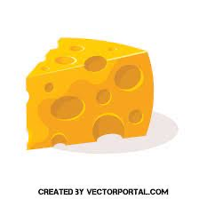
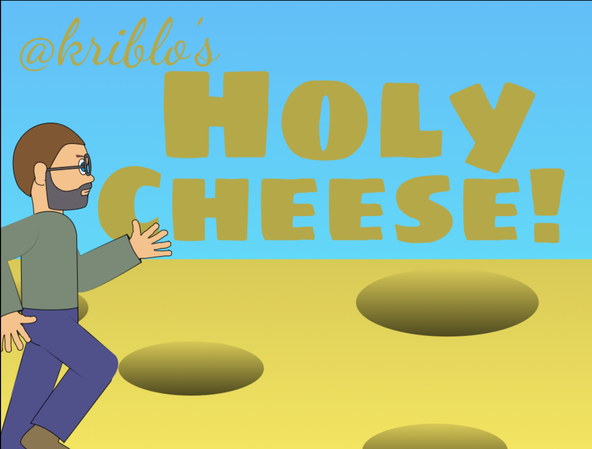
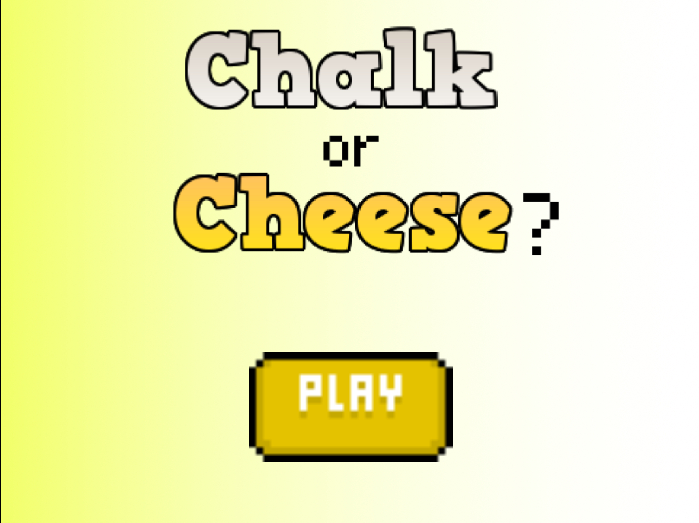

<h1>THE POWER OF CHEESE AMONG US!</h1>

<br>
<br>


<a href="M">
    
  </a>
<a href="Cheese-Clicker">
    
  </a>
 

<a href="Chalk-Or-Cheese">
    
  </a>


        <style>
            body {
  /* Base color for the cheese */
  background-color: #f9eb8f;

  /* Add texture using a subtle noise pattern */
  background-image: url("data:image/png;base64,iVBORw0KGgoAAAANSUhEUgAAAAUAAAAFCAYAAACNbyblAAAAHElEQVQI12P4//8/w38GIAXDIBKE0DHxgljNBAAO9TXL0Y4OHwAAAABJRU5ErkJggg==");

  /* Create irregular edges for a more natural look */
  clip-path: polygon(0 25%, 100% 5%, 100% 95%, 0 75%);

  /* Add depth and dimension with shadows */
  box-shadow: inset 0 3px 4px rgba(0, 0, 0, 0.2), 
              0 4px 5px rgba(0, 0, 0, 0.15);
}

/* Create cheese holes using radial gradients */
.cheese-hole {
  position: absolute;
  width: 15px;
  height: 15px;
  border-radius: 50%;
  background: radial-gradient(circle at center, transparent 5px, #f5e97b 5px);
}

/* Distribute cheese holes randomly */
.cheese-hole:nth-child(1) { top: 10%; left: 20%; }
.cheese-hole:nth-child(2) { top: 40%; left: 70%; }
.cheese-hole:nth-child(3) { top: 70%; left: 30%; }
/* Add more holes as desired, adjusting positions */

            
        h1 {
            color: red;
            font-size: 50px; /* You can adjust the font size as needed */
        }

                .image-container {
      width: 200px;
      height: 200px;
      margin: 20px;
      cursor: pointer;
      float: left; 
      border: 5px solid #000000; 
      border-radius: 10px; 
    }

    </style>

<br>
<br>
<br>
<br>
<br>
<br>
<br>
<br>
<br>

-Parsan's Christmas Present.
